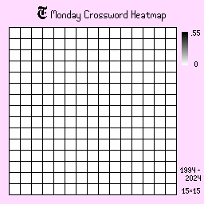

The New York Times Crossword: A Heatmap Analysis
Introduction
The New York Times Crossword puzzles are considered the gold standard in its field and have become a staple of newspapers ever since their introduction in 1942. With standards being enforced and the difficulties of the puzzles ramping up based on the day of the week, how have the blacked out squares created patterns throughout the week, as well as through its decades of existence, and what does it look like?
Gathering Data
The data is taken from The New York Times’ official website where they host the crossword for people to play online. Using a web scraper, I crawled and collected all the crossword data from January 1, 1994 to March 24, 2024. The information collected includes the crossword grid's design as well as its clues and hints.
Converting Data
To convert the data from the web scraper into a heatmap, I looped through each crossword puzzle's file and placed the number of times a blacked out square appeared in each grid into a dictionary, and converted them into the percentage of time it was blacked out and placed it into a text file. Here is the code that made that work:
def weekday(startYear: int, startMonth: int, startDay: int, gridSize: int):
output_file_name = input("freq.txt output file name:\n")
freq = {}
grid_size = gridSize # change for 15 if weekday or 21 if sunday
grids = grid_size*grid_size
dayIncrement = 7 # weekly
for i in range(grids):
freq[i] = 0
curr_date = datetime(startYear, startMonth, startDate) # change to date of first
end_date = datetime(2024, 3, 25)
files_analysed = 0
while(curr_date < end_date):
date_str = curr_date.strftime("%Y-%m-%d")
file_path = "complete/" + date_str + ".txt"
with open(file_path, "r") as file:
json_text = file.read()
json_data = json.loads(json_text)
dimensions = json_data["body"][0]["dimensions"]
if(dimensions["height"] == grid_size and dimensions["width"] == grid_size):
files_analysed += 1
loc = 0
for cell in json_data["body"][0]["cells"]:
if(len(cell) == 0):
if(loc in freq):
freq[loc] += 1
else:
freq[loc] = 1
loc += 1
curr_date += timedelta(days=dayIncrement)
for f in freq:
freq[f] = freq[f]/files_analysed
with open(output_file_name, "w") as file:
file.write(str(freq)[1:len(str(freq))-1])
Creating Heatmaps
Using Aseprite, a pixel-editing software, I created a template using a grid that looks like a blank crossword puzzle.
I kept the insides of the grids (shows up as white) as transparent pixels, with an RGBA value of (0, 0, 0, 0), so my program will systematically know which pixels to fill in with the gradient.
To place it into the template image, I used Python's pillow library and converted the image into a 2-D array, traversing from the top to bottom, left to right. Whenever it detected the transparent pixel from earlier, it would calculate the corresponding RGB value from the frequency text file from before and place it into the cell, using a recursive fill function. I decided to normalize the heatmap for all of them to have a maximum of 0.55, since that was Monday's maximum. The minimum for all of them was 0.
def heatmapify():
image_path = input("input template image name\n")
output_name = input("output image name\n")
freq_path = input("freq file name\n")
image = Image.open(image_path)
image_array = np.array(image)
dimension = input("crossword dimensions (21 for sunday, else 15)\n")
grids = dimension*dimension
new_color = [0, 0, 0, 0]
temp_color = [0, 0, 0, 0]
with open(freq_path, "r") as file:
data_text = file.read()
data_list = data_text.strip().split(',')
data_dict = {}
for pair in data_list:
key, value = pair.split(':')
data_dict[int(key.strip())] = float(value.strip())
min_value = 0.0
max_value = 0.55 # monday contained the highest max value of 0.54
count = 0
for y in range(image_array.shape[0]):
for x in range(image_array.shape[1]):
if count == grids:
break
new_color = rgb(min_value, max_value, data_dict[count])
test_rgb = image_array[y, x, :]
if np.array_equal(test_rgb, temp_color):
count += 1
fill(image_array, x, y, newColor=new_color, tempColor=temp_color)
new_image = Image.fromarray(image_array)
new_image.save(output_name)
# checks if current grid is tempColor (transparent, temporary color) and fills with newColor
def fill(grid, x, y, newColor, tempColor):
if(x < 0 or x > grid.shape[0] - 1 or y < 0 or y > grid.shape[1] - 1):
return
if not np.array_equal(grid[y, x, :], tempColor):
return
grid[y, x, :] = newColor
fill(grid, x-1, y, newColor, tempColor)
fill(grid, x+1, y, newColor, tempColor)
fill(grid, x, y-1, newColor, tempColor)
fill(grid, x, y+1, newColor, tempColor)
# depending on the ratio of minimum and maximum of heatmap and value,
# returns a grayscale value with proper intensity
def rgb(minimum, maximum, value):
minimum, maximum = float(minimum), float(maximum)
ratio = (value-minimum) / (maximum - minimum)
grayscale_value = int(255 * (1-ratio))
return [grayscale_value, grayscale_value, grayscale_value, 255]
Results and Analysis
The output for the code is as follows:
Monday, Tuesday, and Wednesday
Mondays, Tuesdays, and Wednesdays are the more easier puzzles of the week and have distinct dividers on the sides, suggesting a trend of shorter answers, since the board is more closed off. The shades are also darker than the other days, suggesting that there is less variation.
Thursday, Friday, and Saturday
Thursdays, Fridays, and Saturdays are the more difficult puzzles. As a result, the shades are, on average, a lot less intense than the previous days, suggesting higher variation in board designs. There is a clear change in shape on Fridays and Saturdays too, where the board tends to be more open, requiring more intensive puzzle solving.
Sunday
Last but not least, there is the iconic Sunday puzzle. It has dimensions of 21 x 21, compared to the normal 15 x 15 found on the other days of the week. Everything is spread out more, signaled through the lighter shades, which is probably due to its bigger size and a larger variety of possiblities for boards.
Conclusion
The New York Times Crossword puzzle has been the staple of pen-and-paper entertainment for many decades. By analyzing its boards and daily progression of difficulties, beautiful patterns emerged, garnering another level of appreciation for the craft.